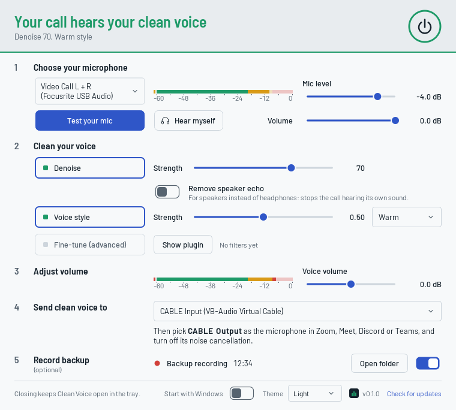

Clean Voice
Sound clear on your podcast. Clean Voice is a free app that cleans up your microphone, so the host hears your voice, not your room.
Find your computer below. Pick Way 1 or Way 2. Both give you the same app.
Windows
Way 1: the installer
First, turn off Smart App Control.
Clean Voice is safe, free, and its code is public. Windows blocks it only because it isn't signed. Signing costs a monthly fee to Microsoft, which this free app doesn't pay.
- Click the Start button, type Smart App Control, and open it.
- Choose Off. (Nothing found, or it's already off? Go to step 3. Windows 10 doesn't have it.)
- Click Download for Windows (the button, right here). Download for Windows Windows 10 or 11
- Open the file you downloaded and follow the installer.
- If Windows says “Windows protected your PC”, click More info, then Run anyway.
Way 2: one command
- Click Copy.
irm https://github.com/paulcaesarflores/clean-voice/releases/latest/download/install.ps1 | iex - Right-click the Start button and choose Terminal (on Windows 10: Windows PowerShell).
- Press Ctrl+V, then Enter.
- Wait about 10 minutes. Clean Voice opens by itself. If it stops, do it again.
Mac
Way 1: the installer
- Click Download for Mac (the button, right here). Download for Mac macOS 13 or later, Apple Silicon and Intel
- Open the file you downloaded and drag Clean Voice into Applications.
- Open Clean Voice. If your Mac says it can't open it: System Settings → Privacy & Security, scroll down, click Open Anyway.
Way 2: one command
- Click Copy.
curl -fsSL https://github.com/paulcaesarflores/clean-voice/releases/latest/download/install.sh | bash - Open Terminal: press Cmd+Space, type Terminal, press Return.
- Press Cmd+V, then Return.
- If your Mac asks to install developer tools, click Install.
- Wait about 10 minutes. Clean Voice opens by itself. If it stops, do it again.
Set up in three steps
-
Install VB-CABLE
It's free. It gives Clean Voice a virtual microphone to send your clean voice through. Get VB-CABLE from vb-audio.com
-
Install Clean Voice
Install Clean Voice (above), then open it and pick your microphone.
-
Choose “CABLE Output” on Windows, “VB-Cable” on Mac, in your call app
In Google Meet, Zoom, Discord or Teams, open the audio settings and pick “CABLE Output” on Windows, “VB-Cable” on Mac, as your microphone and turn off its own noise cancellation. That's your clean voice.

Windows or Mac warns you?
Clean Voice is free and not signed with a paid certificate, so your computer doesn't know it yet.
- Windows: on the blue SmartScreen box, click More info, then Run anyway.
- Mac: open System Settings → Privacy & Security, scroll down and click Open Anyway.